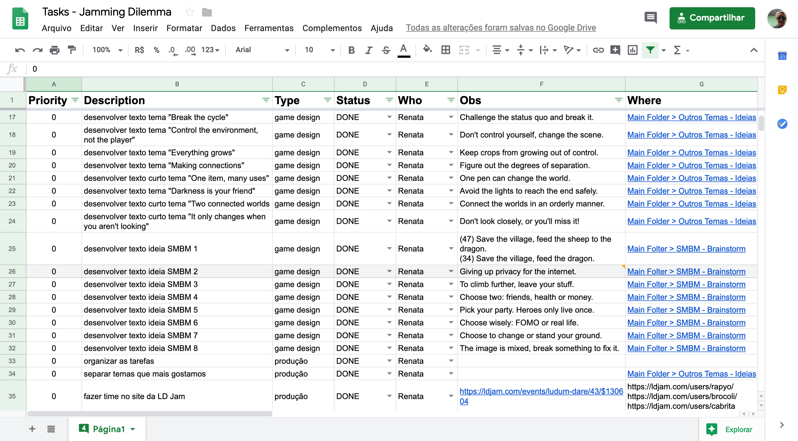
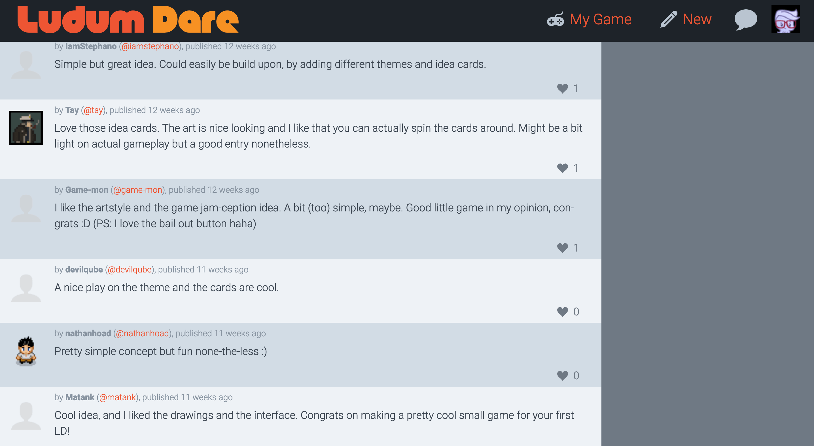

CONTEXT
Jamming Dilemma was made during Ludum Dare 43. I and my team did not have as much time to spend on the process as in previous jams. And we were all working remotely. For this jam, I worked as a producer and game designer.
PROCESS
We were very excited to take part in Ludum Dare, it was our first global jam and we wanted to see what people would come up with. Also, almost all the themes were fantastic and we had been following the announcements talking about ideas we had for them.
The theme was announced, and it was our least favorite one. Sacrifices Must Be Made. At this point, we almost bailed out of the jam. One of my roles as a producer was to keep the team motivated. So we talked and decided that since we weren't as excited about the theme that we were gonna keep things simple.
We started brainstorming some simple ideas about sacrifices, but many of them were dark and we weren't quite satisfied. I came up with the idea of sacrificing ideas because, in the end, that was what the jam was making us do. I was told that it could be considered a petty choice by other LD participants, but I told them that it was a protest art and that there was nothing wrong about protesting and having fun while doing something.
Before going to rest we organized the tasks and what we were going to do throughout the weekend. I decided to try a new style of spreadsheet, with all the tasks in a single sheet and with priority status. So that we could work on major issues first and implement minor ones later.
As a game designer, I had only one task at hand: to write short game ideas for some of the themes that were opted out of the jam. I wrote ideas for: Break the cycle; Control the environment, not the player; Everything grows; Darkness is your friend; Making connections; One item, many uses; Two connected worlds and It only changes when you aren't looking. There were other themes being voted, but those were our favorites.
I had to learn a lesson the tough way when writing those ideas down. I tried to keep everything under 150 characters because I honestly thought that a tweet was a good size to sum up a concept. The thing is... I wrote everything and when the developer tried to add a concept to the cards it did not fit.
I forgot to prototype and because of that, I had to get back to the paper and write everything again using only a third of the characters. Which turned out to be a good exercise, learning how to sum a whole concept up in only 50 characters was quite challenging, but nonetheless fun!
Final Outcome
As a game designer working in this game was great to develop my skill of letting go of ideas. In the past, I've had a tough time giving up on things I believed were good for projects I worked at. Now I can do it without suffering because I understand that better ideas might come up when I do that.
I published my third game at the end of LD43, the Jamming Dilemma. I and my team managed to do and add almost everything that we wanted to the game while having a lot of fun and without stressing out because that was one of our goals. In the end, the LD community enjoyed our take on the theme and voted us high in the humor category. We got 255th out of nearly 2.500 games that were submitted.
